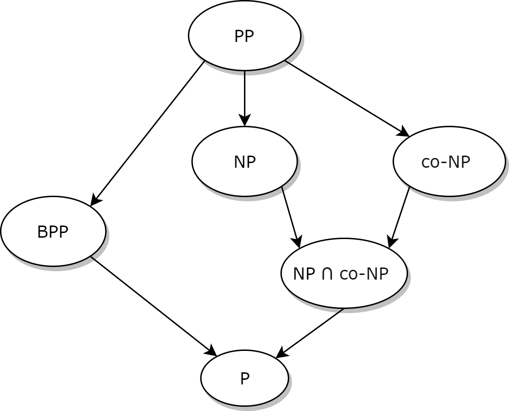

量子计算与计算复杂度（M. N. Vyalyi） Lecture 1
在之前（还没更新）的课程中，主要讨论了量子计算的几种范式，并对其进行了一些形式化。从这里开始，我们将尝试对量子计算的复杂性理论做出详细的解释和说明，并表明其与经典计算复杂度类的关系。首先，有必要快速回顾一下经典复杂性理论带给我们的一些结果。
经典的复杂性理论研究的对象是受到资源限制的计算。我们需要在“简单的”和“困难的”问题之间做出区分，并将这种区分形式化。首先，我们需要考虑计算所需的资源：时间、空间，还有什么吗？
交互资源（interaction）也是一种非标准的资源，在我们后面的讨论中，我们会经常用到相关的概念。交互资源主要有两种，谕示机（oracle）和实验者（prover）。谕示机知道问题的答案，而且它是可信的；实验者也知道问题的答案，但它是不可信的，需要提供一个证明。
既然我们要讨论量子计算，那么量子过程（quantum process）也是一种资源，我们将其归为自然法则（laws of nature）一类。这一类还包括概然过程（probabilistic process），其与量子过程的差别在后文中会进一步提及。
接下来我们快速地回顾以下经典复杂度理论的成果。
基本概念
为了讨论计算复杂度，我们需要从计算开始讲起。为了定义一种计算模型，我们需要给出构形空间（configuration space，可以理解为状态空间），即其所有可能的状态的总和。而一个基本的计算步骤（elementary computation step）可以被定义为一些从构形空间到其自身的函数，一个算法（algorithm）则是一串基本的计算步骤的序列。
在众多计算模型当中，我们选用图灵机（Turing machine）作为基本的计算模型。在这个模型中，构形为一个有限字母表上的序列、一个指针和一个控制态的三元组，一个基本的计算步骤为改变指针所指位置的字符、改变一格指针位置或者改变控制态。在这种情形下，我们可以很轻松地给出时间和空间复杂度的定义：
- 运行时间正比于一个算法所需的基本计算步骤的个数
- 所需花费的空间正比于任一构型中的字符串的长度
以 $\vert x \vert$ 作为字符串 $x$ 的长度，我们可以定义图灵机 $M$ 代表的算法的最坏时间复杂度为：
其中 $T_M(x)$ 为输入 $x$ 时图灵机 $M$ 达到停机状态（halting state）所需的步数。
在复杂度理论的讨论中，我们感兴趣的是 $t_M(x)$ 的渐进界，尤其是渐进上界。一种很重要的情形是多项式时间的算法，我们形式化地定义其为：
一般的，我们认为有多项式时间界的算法为足够快地或者足够高效的。
从中，我们可以抽象出复杂度类（complexity class）的概念。一个复杂度类是一些可以被给定的资源解决的问题的集合。
为了下面讨论的便利，我们定义几种计算问题。
- 函数的计算。记 $A^\ast$ 为一个有限集合 $A$ 上的字符串的总和，计算 $f:A^\ast \rightarrow A^\ast$。以下的文本中，我们都将 $A$ 假定为 $\{0, 1\}$。
- 决策问题（decision problem）。我们称 $L \subseteq A^\ast$ 为一个语言（language），一个决策问题就是计算 $L$ 的示性函数（indicator function） $\mathbb{1}_L(x)$ 。
- 承诺问题（promise problem）。考虑两个不交的语言 $L_0$ 和 $L_1$。给定 $x \in L_0 \cup L_1$，需要求解 $\mathbb{1}_{L_1}(x)$ 。很显然，对语言 $L$ 的决策问题等价于 $(L, L)$ 的承诺问题。
一个很重要的复杂度类为 $\mathsf{P}$ 类，我们称 $L \in \mathsf{P}$ ，若存在一个确定性算法使得其决策问题关于输入长度有多项式时间界。对于承诺问题，定义是类似的。
更广泛的，可以定义类 $\mathsf{FP}$，如果一个函数 $f:A^\ast \rightarrow A^\ast$ 可以在多项式时间内被计算，则称 $f \in \mathsf{FP}$ 。
1. 绿色方块标识的内容均为译注，下同。 ↩
2. 蓝色方块标识的内容均为原注，下同。 ↩
复杂度类 $\mathsf{NP}$ 、规约和完全类
对于复杂度 $\mathsf{NP}$ 的定义，我们需要回到之前给出的交互资源的提法。直观地讲，在计算过程中，有验证者（verifier）和实验者。验证者只能解决 $\mathsf{P}$ 类问题，而实验者可以解决任何问题。而实验者是不受信的，因此它必须向验证者给出证明。我们形式化这种直观，将其定义如下：
我们称 $L \in \mathsf{NP}$，若存在 $V(x, y) \in \mathsf{P}$ 和多项式 $p$ 满足以下条件：
- 完备性：若 $x \in L$，则 $\exists y$，使得 $V(x, y) = 1$ 且 $\vert y \vert \leqslant p(\vert x \vert)$ 。
- 可靠性：若 $x \not \in L$，则 $\forall y$，$V(x, y) = 0$ 。
其中 $V(x, y)$ 就是对验证者的形式化。为了证明答案 $x$ 是正确的，实验者需要给出证明 $y$ ，其长度（耗费的空间资源）也应该是多项式的，使得利用 $y$ 验证 $x$ 是一个 $\mathsf{P}$ 类问题。而如果答案 $x$ 是错误的，无论给出什么证明，都不能使得验证者误认为 $x$ 是正确的。
很显然，$\mathsf{P} \subseteq \mathsf{NP}$。我们下面不加证明地给出三个 $\mathsf{NP}$ 问题的例子，它们可能是属于 $\mathsf{NP} \setminus \mathsf{P}$ 的：
- $\text{3-SAT}$: 给定一个三变量的合取范式，确定其是否可满足。
- $\text{3-COLOR}$: 给定一个图，确定其是否能被三种颜色染色。
- $\large\text{P}\small\text{ARTITION}$: 给定一列正整数，确定是否存在一个平均分划。
考虑计算问题的复杂度的排序方式。很直观地，如果我们能够将某个问题化作另一个问题，这个问题肯定不会比另一个问题更难解决。这种直觉使我们能够定义规约（reduction）这个概念，它定义了复杂度类中的一种二元关系。
我们称一个承诺问题 $(L_0, L_1)$ 可以多项式地规约（polynomial reduction, 或者 Karp reduction）到一个问题 $(K_0, K_1)$ ，如果存在一个函数 $f \in \mathsf{FP}$，使得：
记作 $(L_0, L_1) \leqslant_p (K_0, K_1)$ 。
很容易表明，这个二元关系具备传递性，只需观察到 $\mathsf{FP}$ 类中的函数的复合还在 $\mathsf{FP}$ 类中即可。这个二元关系引导我们定义出一个复杂度类中“最难”的问题，这些问题被称为完全问题（complete），因为它们事实上表征了整个复杂度类最难解的一些问题。
我们称一个问题 $P \in \mathcal{C}$ 为 $\mathcal{C}$-完全的，如果对任意 $L \in \mathcal{C}$ ，有 $L \leqslant_p P$ 成立。
$\mathsf{NP}$ 类中同样包含一个完全集，这已经由 Cook 和 Levin 证明（通过 $\text{3-SAT}$ 问题）。事实上，上面举出的三个例子均为 $\mathsf{NP}\text{-complete}$ 问题。
复杂度类的补、$\text{co-}\mathsf{NP}$ 类
这里的考虑很好理解，既然我们定义了复杂度类，那么它自然而然地可以定义出一个补：设 $\mathcal{C}$ 为一复杂度类，则 $\text{co-}\mathcal{C}$ 为其补，对任意 $L \in \mathcal{C}$，$\bar L \in \text{co-}\mathcal C$。
一个很显然的命题是，$\mathsf{P} = \text{co-}\mathsf{P}$。我们只需要将算法的输出翻转一下，就可以得到 $\text{co-}\mathsf{P}$ 问题的解。
$\text{co-}\mathsf{NP}$ 和 $\mathsf{NP}$ 的关系仍然悬而未决，我们在这里给出一个 $\mathsf{NP} \cap \text{co-}\mathsf{NP}$ 的问题：
很显然，这不是一个决策问题。我们需要将其改写成决策问题：
证明这个问题在 $\mathsf{NP}$ 中是显然的，实验者只需要给出一个分解作为证明即可。
证明其属于 $\text{co-}\mathsf{NP}$ 也并不困难，和上述方法是完全相同的。
我们还可以不加证明的给出一个 $\mathsf{NP} \cap \text{co-}\mathsf{NP}\text{-complete}$ 的承诺问题的实例，决策问题的例子仍然是未知的。
概率性的计算，类 $\mathsf{BPP}$ 和 $\mathsf{PP}$
如前所述，计算过程中，随机数也是一种资源。接下来我们探讨可以访问随机数的算法。在这里，我们将随机位认为是独立平均分布的，$0$ 和 $1$ 出现的概率各占一半。
对于一个涉及随机数的计算，出错也是难免的，因此，我们要提出的第一个问题是，如何定义一个成功的计算？
直觉地，我们认为，一个计算如果正确的概率“过半”，那它就是成功的，设 $f(x)$ 为目标函数，$\text{Res}(x)$ 为计算结果，我们可以形式化这个定义为：
注意到我们留了一个 $a$ 作为参量。这是因为，$a$ 是否等于 $\frac 1 2$ 的情形是完全不同的，其区别的来源是一个算法能否被强化（amplify），即，经过多次重复这个算法（ $t$ 次），然后取出现最频繁的结果，这样似乎能够增加其准确性。事实上，可以证明以下命题成立：
若 $\mathbf{P}[\text{Res}(x) \neq f(x)] < \frac 1 2 - \epsilon$，则增强后的算法出错的概率为：
也就是说，$a < \frac 1 2$ 时，算法出错的概率可以逐渐收敛到 $0$，若 $a = \frac 1 2$，则我们并不能得出有用的结果。这样我们可以定义两个复杂度类：
若存在一个多项式 $p$ 和一个多项式时间内的确定性算法 $V(x, r)$ 满足以下条件，则称 $(L_0, L_1) \in \mathsf{BPP}$ ：
完备性：若 $x \in L_1$，则 $\mathbf{P}_{r \leftarrow \mathcal{U}_{p(|x|)}}[V(x, r) = 1] > \frac 2 3$
可靠性：若 $x \in L_0$，则 $\mathbf{P}_{r \leftarrow \mathcal{U}_{p(|x|)}}[V(x, r) = 1] < \frac 1 3$
其中 $\mathcal{U}_m$ 是在长度 $m$ 的字符串上的均匀分布。
很显然，$\mathsf{P} \subseteq \mathsf{BPP}$，只需要取 $p = 0$ 即可。
若存在一个多项式 $p$ 和一个多项式时间内的确定性算法 $V(x, r)$ 满足以下条件，则称 $(L_0, L_1) \in \mathsf{PP}$ ：
完备性：若 $x \in L_1$，则 $\mathbf{P}_{r \leftarrow \mathcal{U}_{p(|x|)}}[V(x, r) = 1] > \frac 1 2$
可靠性：若 $x \in L_0$，则 $\mathbf{P}_{r \leftarrow \mathcal{U}_{p(|x|)}}[V(x, r) = 1] < \frac 1 2$
其中 $\mathcal{U}_m$ 是在长度 $m$ 的字符串上的均匀分布。
同样显然地，$\mathsf{BPP} \subseteq \mathsf{PP}$，$\mathsf{PP} = \text{co-}\mathsf{PP}$。
接下来，我们要表明另一个复杂度层级，$\mathsf{NP} \subseteq \mathsf{PP}$，从而使我们的复杂度继承关系形如下图：

为了给出这个证明，我们需要引出一些额外的定义，并从另一个角度重新表述 $\mathsf{NP}$ 和 $\mathsf{PP}$ 的定义。
证明 $\mathsf{NP} \subseteq \mathsf{PP}$：非确定性图灵机、$\text#\mathsf{P}$-函数和间隙函数
非确定性图灵机（non-deterministic Turing machine, NTM）与确定性图灵机的差别在于，在每一步计算中，它可以在转移函数之间做出随机选择。因此，NTM 的计算过程是一棵含根的树，而非一列构形空间的序列。树的根部为起始状态，叶为停机状态，从根部到叶的一条路径称为一条计算路径（computation path），计算路径的最大值被定义为这个 NTM 的运行时间。
我们考虑停机状态有两种，接受（accept）和拒绝（reject）。记接受的路径的总数为 $\text{acc}_M(x)$，其中 $M$ 为一图灵机，$x$ 为一输入。
接下来我们定义 $\text#\mathsf{P}$-函数和间隙函数的概念。称一函数 $f:\{0, 1\}^\ast \rightarrow \mathbb{Z}_+$ 为一个 $\text#\mathsf{P}$-函数，若存在一个多项式运行时间的 NTM $M$ 使得 $\forall x, f(x) = \text{acc}_M(x)$。称一函数 $f:\{0, 1\}^\ast \rightarrow \mathbb{Z}$ 为一个间隙函数（gap function），若存在两个 $\text#\mathsf{P}$-函数 $g, h$，使得 $\forall x, f(x) = g(x) - h(x)$。